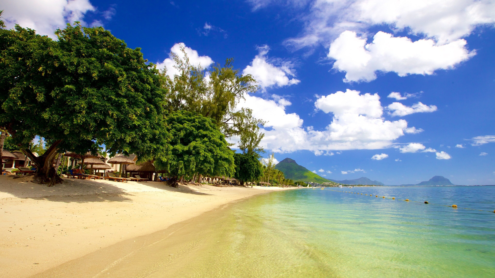

LUX* Grand Baie
Right on the island's liveliest strip in the north — walkable restaurants and bars, plus the resort's own private lagoon pools.

Destination Guide
Lagoon-blue water, a mountain shaped like a fortress, and a patch of hillside that comes in seven colours. Here's how to see it without overpaying for any of it.
Home / Destinations / Mauritius
Best time to go
May–Dec
Fly into
Mauritius (MRU)
Currency
Mauritian Rupee (MUR)
Suggested stay
7–9 days
Search flights and hotels for Mauritius right here — no extra tabs.
Prefer another search engine? Kiwi.com →
Mauritius packs an entire trip's worth of scenery into an island you can drive across in about two hours. The coast does the postcard work — lagoons calmed by a near-unbroken coral reef, powder-white beaches on three sides of the island — while the interior is where the surprises are: a hillside of naturally-coloured sand, a rainforest gorge full of waterfalls, and a mountain, Le Morne Brabant, with its own UNESCO listing and a heavy history behind the view. Add genuinely good Creole and Indian Ocean seafood, and you've got a week that doesn't need much padding.
The west coast is the classic base for sunset and calm water; the north for nightlife and watersports; the south for something quieter and greener.
Right on the island's liveliest strip in the north — walkable restaurants and bars, plus the resort's own private lagoon pools.

West coast, on a long stretch of sand with sugar-cane fields behind it — a reliable mid-to-upper resort with an easy beach entry.

Flic-en-Flac, with Le Morne visible down the coastline — thatched-roof architecture and one of the west's most reliable sunsets.
Further South

Heritage Awali Golf & Spa Resort
Bel Ombre, on the greener southern coast — golf course, spa, and far fewer crowds than the north or west.

Château de Bel Ombre
A restored 19th-century plantation house nearby, now a fine-dining restaurant — book a table even if you're staying elsewhere.
Nearly the whole coastline is protected by reef, so the lagoon stays calm and shallow — good for swimming, not much for surf.

The west coast's longest public beach — wide, shaded by casuarina trees, and the best spot on the island for a free sunset.

A long, quieter public beach in the north, with fewer resort crowds than Grand Baie a few minutes down the road.

One of the best beaches on the island, set right beneath Le Morne Brabant — also the island's top kitesurfing spot.

A boat-only island off the east coast — the classic day trip, with a golf course, a waterfall stop en route, and a beach that gets crowded by midday.
Le Morne Brabant — the basalt monolith towering over the southwest tip of the island is a UNESCO World Heritage Site, chosen for its role as a hideout for escaped slaves in the 18th and 19th centuries. The hike to the base is doable in a morning; the summit trail is steeper and best done with a guide.
The island's interior does the heavy lifting for anyone who wants a day away from the beach.

Volcanic sand dunes in bands of purple, red, and ochre — a genuine geological quirk, and one of the few Mauritius sights that photographs exactly as advertised.

A single 100-metre drop into a forested gorge, viewable from a platform a short walk from the coloured earths — easy to pair as one stop.

The island's largest national park — native rainforest, marked hiking trails, and viewpoints looking clear down to the coast on a good day.

Tamarind Falls (Les 7 Cascades) — seven linked waterfalls cutting through a canyon in the island's centre, best seen from the marked viewpoint or, for the more adventurous, on a guided abseiling and canyoning trip down through the pools.

Pamplemousses, north of Port Louis — giant Victoria water lilies, a spice garden, and giant tortoises, all under 200-year-old trees.

A former sugar mill turned museum — the clearest explanation you'll find of why sugar cane shaped so much of the island's history.

In the south — giant Aldabra tortoises you can walk among, plus a lemur enclosure, on the way to or from Bel Ombre.
Fresh fish and seafood are the constant — ask what came in that morning rather than ordering off the menu by default.

A local favourite for grilled lobster, crab, and mussels — casual, generous portions, and usually needs a reservation on weekends.

Tented pontoons out over the lagoon — go for sunset and book ahead; the setting alone is worth the trip.
Fine dining in a restored colonial plantation house in the south — the occasion-dinner option if you want to dress up once during the trip.

The national carrier flies into Sir Seewoosagur Ramgoolam International Airport (MRU) from a wide network of African, European, and Asian cities, with a modern A350 fleet on its longer-haul routes. It's usually the most direct way in, though European and Gulf carriers also run frequent connections via their hubs.
Days 1–2
West Coast
Land, settle into Flic-en-Flac, and do nothing but the beach and a sunset for the first day.
Days 3–4
The South & Interior
Chamarel's coloured earths and waterfall, Black River Gorges, and Le Morne Brabant.
Day 5
Move North
Drive up to Grand Baie, stopping at the Botanical Garden and L'Aventure du Sucre en route.
Days 6–7
Île aux Cerfs & the North
Boat day trip to the island, then Mont Choisy and a last few easy days before the flight home.
Getting around
Rental cars are the easiest way to cover the island independently — driving is on the left. Taxis and hotel transfers are the alternative if you'd rather not drive.
Entry requirements
Most nationalities get a free tourist visa on arrival; check the official Passport and Immigration Office site rather than third-party lookalikes.
Packing
Reef-safe sunscreen, water shoes for the coloured earths and waterfall trails, and a light layer for evenings in the interior.
Compare flights to Mauritius, and browse hotels from Grand Baie to Bel Ombre, in one place.